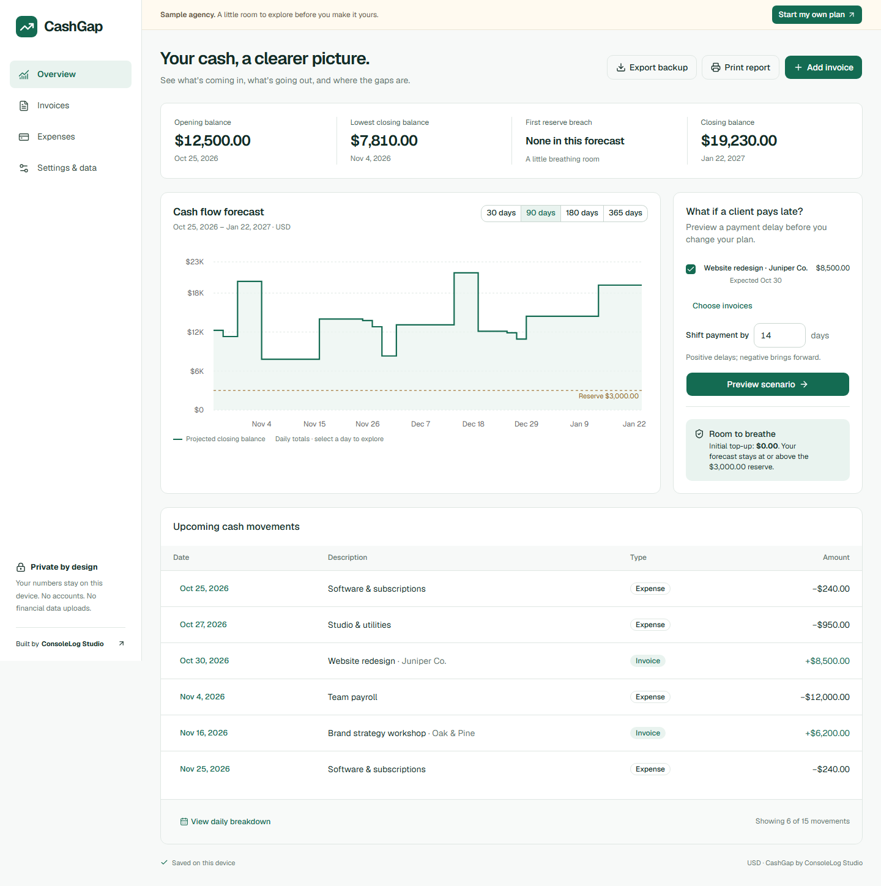

CashGap · An explainable cash-flow planner
Self-initiated ConsoleLog Studio project · Synthetic sample · Actual browser screenshot

1234- Four metrics make the forecast's starting point and low point explicit.
- Daily step balances and the reserve line show when cash gets tight.
- Preview a client payment delay before changing any saved record.
- Trace the transactions in the daily table and individual day explanations.